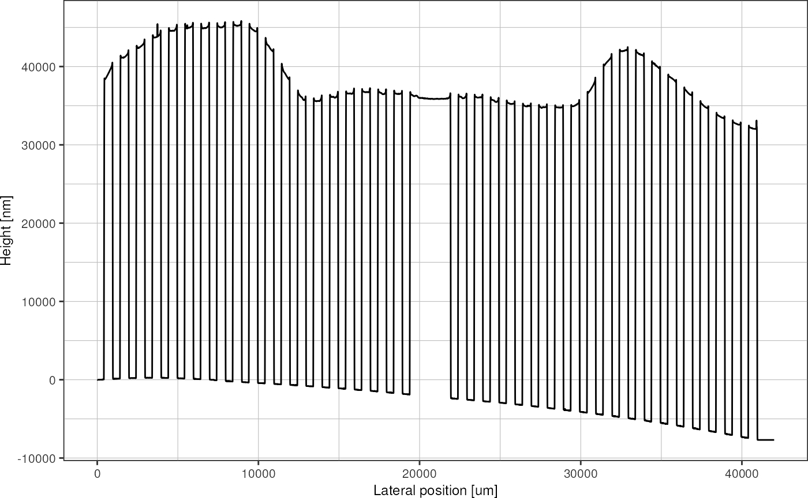
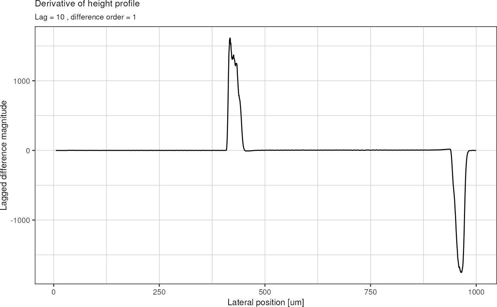

Spincurve Analysis
spincurves.Rmdintroduction
For my microfluidic chips, channel heights in the range of 20-30 µm
are desired. To obtain these heights during the photolithography
process, a photoresist with suitable viscosity is required. 
These are the spin curves for the SU-8 3000 series (“SU-8 3000 for Microstructure Fabrication Kayaku Advanced Materials. Kayaku Advanced Materials, Inc.” n.d.). It seems like SU-8 3035 can yield thicknesses in the desired range (extrapolating for higher RPMs, and from the experience that at 6000 RPM 30 µm thickness can be achieved with SU-8 3050). Therefore, 115.2 g SU-8 3050 was mixed with 1.42 g of thinner solution, in order to obtain a custom dilution that mimics the behaviour of SU-8 3035. In the following, SU-8 3035 refers to this custom dilution.
After preparation of SU-8 3035, a spin curve analysis was conducted to characterize the relation between spin speed and film thickness of the custom photoresist. To that end, a cross pattern (see image) was exposed on cleaned and re-used silicon wafers, after spin-coating SU-8 3035 at 3000, 4000, and 5000 RPM, respectively. For each of these RPM, three chips were prepared: two chips using a spin duration of 30s (to have duplicate measurements), and one chip using a spin duration of 60 s. Therefore, in total, nine wafers were prepared.


After photolithography, the resulting height profiles were measured using a Dektak profilometer. Unfortunately, when measuring over long distances with this machine, measurements are drifting away from the reference level quite significantly, which necessitates a correction before data evalutation. Therefore, the cross structure exposed on the wafer includes repeated gaps in order to pick up the zero-level along the entire wafer.
For each wafer, four traces were measured: top-to-bottom, left-to-right, bottom-to-top, and right-to-left (see figure). This results in duplicate measurements for all the structures.
In this vignette, the post-processing and drift correction of the Dektak data will be carried out. This includes:
- reading in CSV files,
- recognition of the reference level segments,
- drift correction,
- averaging of duplicate measurements,
- interpolation of height profiles between the gaps in the structure.
library(masterthesis)
library(dplyr)
#>
#> Attaching package: 'dplyr'
#> The following objects are masked from 'package:stats':
#>
#> filter, lag
#> The following objects are masked from 'package:base':
#>
#> intersect, setdiff, setequal, union
library(tibble)
library(readr)
library(stringr)
library(ggplot2)
# library(tidyr)data loading
Get file names:
files <- list.files("data/spincurve_csv/", full.names = TRUE)
head(files)
#> [1] "data/spincurve_csv//00_job9945_eastwest.csv"
#> [2] "data/spincurve_csv//01_job9945_northsouth.csv"
#> [3] "data/spincurve_csv//01_job9945_westeast.csv"
#> [4] "data/spincurve_csv//02_job9946_southnorth.csv"
#> [5] "data/spincurve_csv//03_job9945_southnorth.csv"
#> [6] "data/spincurve_csv//03_job9950_northsouth.csv"Read in all the csv files and concatenate them into a single tibble dataframe:
results <- tibble()
for (f in files) {
d <- read_csv(f, skip = 19, show_col_types = FALSE, col_names = c("position", "height")) %>%
select(position, height) %>%
mutate(id = basename(f)) # add the wafer id
results <- bind_rows(results, d)
}
results
#> # A tibble: 2,815,001 × 3
#> position height id
#> <dbl> <dbl> <chr>
#> 1 0 1.85 00_job9945_eastwest.csv
#> 2 0.5 1.22 00_job9945_eastwest.csv
#> 3 1 0.59 00_job9945_eastwest.csv
#> 4 1.5 0 00_job9945_eastwest.csv
#> 5 2 -0.51 00_job9945_eastwest.csv
#> 6 2.5 -0.95 00_job9945_eastwest.csv
#> 7 3 -1.32 00_job9945_eastwest.csv
#> 8 3.5 -1.63 00_job9945_eastwest.csv
#> 9 4 -1.88 00_job9945_eastwest.csv
#> 10 4.5 -2.08 00_job9945_eastwest.csv
#> # … with 2,814,991 more rowsAdd information about spin speed and duration:
# table relating wafer id with RPM
rpm <- c(job9945 = 3000, job9946 = 3000, job9947 = 4000, job9948 = 4000,
job9949 = 5000, job9950 = 5000, job10053 = 4000, job10054 = 5000, job10055 = 3000)
# table relating wafer id with seconds at max RPM
spinTime <- c(job9945 = 30, job9946 = 30, job9947 = 30, job9948 = 30,
job9949 = 30, job9950 = 30, job10053 = 60, job10054 = 60, job10055 = 60)
results <- results %>%
mutate(wafer = str_extract(id, "job\\d+"),
direction = str_extract(id, "[a-z]+\\.") %>%
str_remove("\\."),
orientation = case_when(direction %in% c("eastwest", "westeast") ~ "horizontal",
TRUE ~ "vertical"),
rpm = rpm[wafer],
spintime = spinTime[wafer]) %>%
# order rows by wafer, direction and position
group_by(rpm, spintime, direction) %>%
arrange(rpm, spintime, .by_group = TRUE) %>%
ungroup()
results
#> # A tibble: 2,815,001 × 8
#> position height id wafer direction orientation rpm spintime
#> <dbl> <dbl> <chr> <chr> <chr> <chr> <dbl> <dbl>
#> 1 0 1.85 00_job9945_eastwe… job9… eastwest horizontal 3000 30
#> 2 0.5 1.22 00_job9945_eastwe… job9… eastwest horizontal 3000 30
#> 3 1 0.59 00_job9945_eastwe… job9… eastwest horizontal 3000 30
#> 4 1.5 0 00_job9945_eastwe… job9… eastwest horizontal 3000 30
#> 5 2 -0.51 00_job9945_eastwe… job9… eastwest horizontal 3000 30
#> 6 2.5 -0.95 00_job9945_eastwe… job9… eastwest horizontal 3000 30
#> 7 3 -1.32 00_job9945_eastwe… job9… eastwest horizontal 3000 30
#> 8 3.5 -1.63 00_job9945_eastwe… job9… eastwest horizontal 3000 30
#> 9 4 -1.88 00_job9945_eastwe… job9… eastwest horizontal 3000 30
#> 10 4.5 -2.08 00_job9945_eastwe… job9… eastwest horizontal 3000 30
#> # … with 2,814,991 more rowsThe raw data looks like this:
results %>%
# filter for single trace
filter(id == "00_job9945_eastwest.csv") %>%
plot_heightprofile()
Now I use the geometrical information of my design to determine peaks and valleys in the trace. First, I find the positions (x coordinate) of the leftmost and rightmost structure using the slope of the graph, and then I rescale everything so that it spans the known width of 40.5 mm that was written on the wafer. The rescaling is necessary in case the trace was not perfectly aligned with the structure, i.e. slightly diagonal and therefore a little bit longer.
results %>%
# filter for single trace
filter(id == "00_job9945_eastwest.csv",
position < 1000) %>% # zoom at left-most peak
plot_heightprofile()To find the x coordinate were the first structure begins, I calculate the first derivative (lagged differences) in order to identify regions with high slope. The first derivative of above graph then looks like this:
# subset the data
df <- results %>%
filter(id == "00_job9945_eastwest.csv",
position < 1000)
# lagged differences parameters
lag <- 10
dif <- 1
offset <- dif * lag
dHeight <- diff(df$height, lag = lag, differences = dif) / diff(df$position, lag = lag, differences = dif)
# adjust dimension of x axis (lagging difference removes the first l elements):
pos <- df$position[(offset+1):length(df$position)]
ggplot(data.frame(pos, dHeight), aes(x = pos, y = dHeight)) +
# geom_point(shape = 23) +
geom_line() +
labs(title = "Derivative of height profile",
subtitle = paste("Lag =", lag, ", difference order =", dif),
x = "Lateral position [µm]",
y = "Lagged difference magnitude") +
theme_pretty()